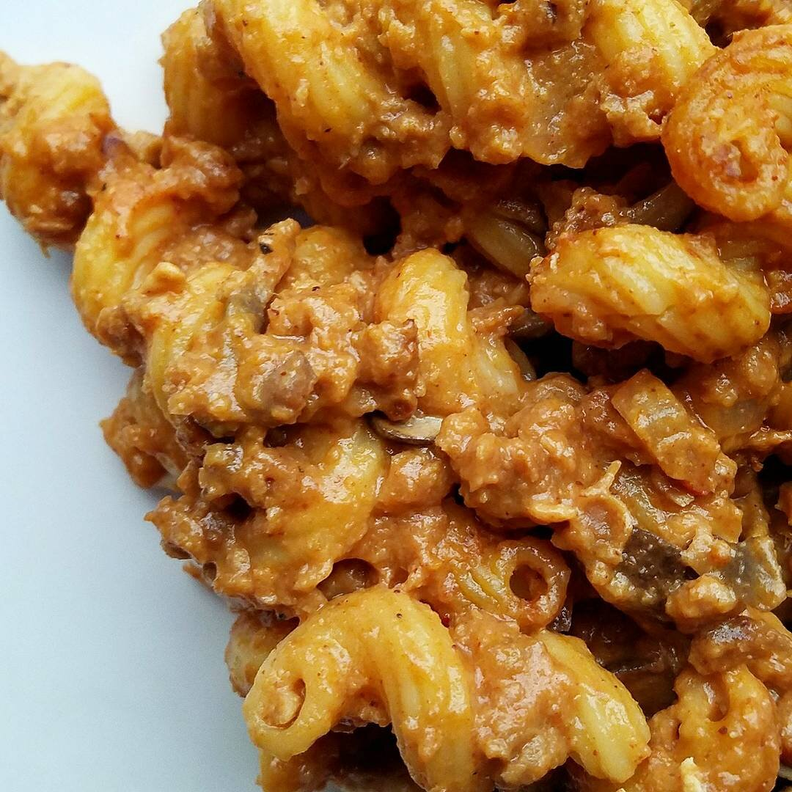

Vegan Cheezy Taco Pasta

I've done it. I've evolved into my final form: mad scientist vegan chef, lvl 96. This is what I'm going to call...#vegan Hamburger Helper, cheezy taco version. Aka nacho taco pasta bake? I'm not entirely sure but you get it. And like...I know hamburger helper is the crappiest crap to ever exist. BUT IT'S SO GOOD. AND THIS IS SO GOOD. AND BASICALLY life is amazing. I'm just sitting here in awe wondering how it's totally vegan and dairy free. Life has been calming down a bit now and it feels good. :) Getting into a rhythm at the new house and finding the new normal. Now that things are settling, I'm shifting all my focus towards training for my century bike ride in a few months. I'm struggling since I don't have a "go-to" group of cycling friends anymore...and it's a little frustrating that my training depends on other people's free time. But Nick has been a champ and picking up riding AND riding the same distances as me right away. Things can't always be as high volume as I'd like...but that's fine. This weekend, I had zeroooo long ride....which is kind of a bummer. But I think my brain needed it for mental health to just chill for a weekend.
Has anyone ever done a century? I heard that this one is relatively flat, so I'm trying not to worry too much. But I know 1 of 2 things is going to do me in. 1) any hills or 2) forgetting to EAT ENOUGH. I keep getting advice to remember to eat during the ride even when you don't feel hungry. I alwayssss forget that. I'm also mildly worried that I won't have anyone to draft off of...but I'm hoping I can just leech off someone random hahaha..ahah....ha....forreal.
So, FOOD!! I made this vegan cheezy taco pasta after a long ride with Nick for us to chow down on. We went innnnnn. It was just right - protein, carbs, comfort fooooodd... Try it out and let me know what you think! Nick said it's sure to fool any meat eater that they're eating beef pasta, even though it's vegan. I love this so much. Enjoy!
Vegan Cheezy Taco Pasta
Serves: 6
-
4 servings pasta of choice, dry
-
1/2 onion, diced
-
4 oz mushrooms, diced
-
3 TBSP earth balance vegan butter
-
3 servings vegan Gardein beefless crumbles
-
2 tsp salt free taco seasoning
-
1/4 cup salsa
-
1/2 cup canned red enchilada sauce
-
1 jar of vegan nacho cheese (I used Vegan Valley from Whole Foods)
-
1/4 cup nutritional yeast
-
Shredded vegan cheese, for topping (Optional)
First, cook the pasta according to directions on the package. In a large skillet, add the onion, mushrooms, vegan butter, and beefless crumbles. Cook on a medium heat for 4-5 minutes until the veggies are softened, then add the taco seasoning, salsa, enchilada sauce, vegan nacho cheese, nutritional yeast, and the cooked pasta. Mix to incorporate.
Essentially you're donezo but you can top with a little shredded vegan cheese if you'd like, then put in the oven at 375F an extra 5-10 mins to melt the cheese on top. Enjoy!!